CODING AGENTS AS PIXEL WORLD MODELS
traex/DeepSeek-V4.1-Flash · 0170
点击播放 · 原生 RGB 像素
逐轮保存的候选
回放视频、检查图与代码变化。
每份候选均可单独播放。实际图片检查记录在下方工具轨迹中。
候选 01播放与检查图
点击播放 · 原生 RGB 像素
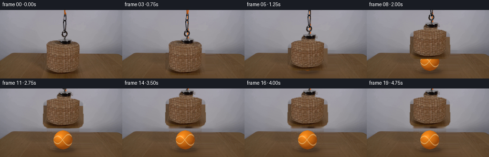
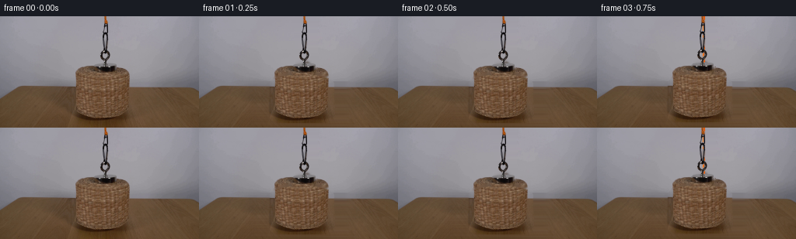
展开代码变化
--- 上一保存版本 +++ 本次保存版本 @@ -0,0 +1,233 @@ +from pathlib import Path + +import cv2 +import numpy as np + +import artifact_io + + +CASE_DIR = Path(__file__).resolve().parent +WIDTH, HEIGHT = 256, 144 +FRAME_COUNT = 20 +FPS = 4 + + +def _ellipse_mask(shape, center, axes, blur=0.0): + mask = np.zeros(shape[:2], dtype=np.float32) + cv2.ellipse(mask, center, axes, 0, 0, 360, 1.0, -1, cv2.LINE_AA) + if blur > 0: + mask = cv2.GaussianBlur(mask, (0, 0), blur) + return np.clip(mask, 0.0, 1.0) + + +def _polygon_mask(shape, points, blur=0.0): + mask = np.zeros(shape[:2], dtype=np.float32) + cv2.fillPoly(mask, [np.asarray(points, dtype=np.int32)], 1.0, cv2.LINE_AA) + if blur > 0: + mask = cv2.GaussianBlur(mask, (0, 0), blur) + return np.clip(mask, 0.0, 1.0) + + +def _smoothstep(value): + value = np.clip(value, 0.0, 1.0) + return value * value * (3.0 - 2.0 * value) + + +def _build_background(source): + """Remove the hanging assembly and synthesize the central tabletop.""" + removal = np.zeros((HEIGHT, WIDTH), dtype=np.uint8) + cv2.ellipse(removal, (132, 88), (45, 17), 0, 0, 360, 255, -1) + cv2.rectangle(removal, (87, 84), (177, 139), 255, -1) + cv2.ellipse(removal, (132, 135), (45, 11), 0, 0, 360, 255, -1) + cv2.rectangle(removal, (123, 0), (152, 70), 255, -1) + + clean = cv2.inpaint(source, removal, 7, cv2.INPAINT_NS).astype(np.float32) + + # Rebuild the tabletop from its left and right edges. The fine residual + # texture is tiled from an unobstructed part of the same table. + yy, xx = np.mgrid[0:HEIGHT, 0:WIDTH] + region = (yy >= 84) + left_x, right_x = 63, 199 + span = np.clip((xx - left_x) / float(right_x - left_x), 0.0, 1.0) + left = source[:, left_x : left_x + 1].astype(np.float32) + right = source[:, right_x : right_x + 1].astype(np.float32) + base = left * (1.0 - span[:, :, None]) + right * span[:, :, None] + + source_row = source[:, right_x : 251].astype(np.float32) + row_low = cv2.GaussianBlur(source_row, (17, 1), 0) + residual = source_row - row_low + residual = cv2.GaussianBlur(residual, (0, 0), 0.45) + tile = np.concatenate([residual, residual[:, ::-1], residual], axis=1) + start = (left_x - 20) % tile.shape[1] + texture = tile[:, start : start + WIDTH] + if texture.shape[1] < WIDTH: + texture = np.pad(texture, ((0, 0), (0, WIDTH - texture.shape[1]), (0, 0)), mode="edge") + + synthesized = base + texture + edge = np.minimum(np.clip((xx - left_x) / 12.0, 0.0, 1.0), + np.clip((right_x - xx) / 12.0, 0.0, 1.0)) + table_alpha = region.astype(np.float32) * edge + clean = clean * (1.0 - table_alpha[:, :, None]) + synthesized * table_alpha[:, :, None] + + # A small amount of grain softens the boundary at the back edge of the table. + y_blend = np.clip((yy - 82) / 8.0, 0.0, 1.0) + clean = clean * (1.0 - 0.20 * y_blend[:, :, None]) + source * (0.20 * y_blend[:, :, None]) + return np.clip(clean, 0.0, 255.0).astype(np.uint8) + + +def _build_assembly(source): + """Return the photographed basket, magnet, and chain as an RGBA sprite.""" + alpha = np.zeros((HEIGHT, WIDTH), dtype=np.float32) + + top = _ellipse_mask(source.shape, (132, 87), (41, 12), 0.55) + body = _polygon_mask( + source.shape, + [(91, 87), (173, 87), (174, 128), (171, 134), (164, 137), + (100, 137), (93, 134), (90, 128)], + 0.55, + ) + alpha = np.maximum(alpha, np.maximum(top, body)) + + magnet = _ellipse_mask(source.shape, (133, 72), (14, 10), 0.65) + alpha = np.maximum(alpha, magnet) + + # The chain is dark against a smooth wall. A row-local background estimate + # preserves the real highlights and the openings between links. + chain_region = (np.indices((HEIGHT, WIDTH))[1] >= 123) & ( + np.indices((HEIGHT, WIDTH))[1] <= 152 + ) & (np.indices((HEIGHT, WIDTH))[0] <= 70) + bg = np.empty_like(source, dtype=np.float32) + for y in range(71): + row = source[y].astype(np.float32) + estimate = np.median(np.concatenate([row[116:124], row[151:159]], axis=0), axis=0) + bg[y] = estimate + distance = np.max(np.abs(source.astype(np.float32) - bg), axis=2) + chain_alpha = np.clip((distance - 3.0) / 18.0, 0.0, 1.0) + chain_alpha = cv2.GaussianBlur(chain_alpha, (0, 0), 0.35) + chain_alpha *= chain_region.astype(np.float32) + alpha = np.maximum(alpha, chain_alpha) + + rgba = np.dstack([source.astype(np.float32), alpha * 255.0]) + return rgba.astype(np.uint8) + + +def _composite_rgba(dst, sprite, dx, dy): + h, w = sprite.shape[:2] + x0, y0 = max(0, dx), max(0, dy) + x1, y1 = min(WIDTH, dx + w), min(HEIGHT, dy + h) + if x0 >= x1 or y0 >= y1: + return + sx0, sy0 = x0 - dx, y0 - dy + sx1, sy1 = sx0 + (x1 - x0), sy0 + (y1 - y0) + src = sprite[sy0:sy1, sx0:sx1].astype(np.float32) + a = src[:, :, 3:4] / 255.0 + dst[y0:y1, x0:x1] = ( + dst[y0:y1, x0:x1].astype(np.float32) * (1.0 - a) + src[:, :, :3] * a + ).astype(np.uint8) + + +def _draw_ball(background, rng): + canvas = background.astype(np.float32) + cx, cy, radius = 132.0, 108.0, 20.0 + + # Soft contact shadow and the cool reflected-light area beneath the ball. + shadow = np.zeros((HEIGHT, WIDTH), dtype=np.float32) + cv2.ellipse(shadow, (134, 128), (22, 5), 0, 0, 360, 0.42, -1, cv2.LINE_AA) + shadow = cv2.GaussianBlur(shadow, (0, 0), 3.2) + canvas *= 1.0 - shadow[:, :, None] * np.array([0.72, 0.72, 0.66], dtype=np.float32) + + yy, xx = np.mgrid[0:HEIGHT, 0:WIDTH] + nx = (xx + 0.5 - cx) / radius + ny = (yy + 0.5 - cy) / radius + rr = nx * nx + ny * ny + inside = rr <= 1.0 + nz = np.sqrt(np.clip(1.0 - rr, 0.0, 1.0)) + + # Felt surface with a subtle low-frequency color mottling. + noise = rng.normal(0.0, 1.0, (HEIGHT, WIDTH)).astype(np.float32) + noise = cv2.GaussianBlur(noise, (0, 0), 0.65) + mottle = cv2.GaussianBlur(rng.normal(0.0, 1.0, (HEIGHT, WIDTH)).astype(np.float32), (0, 0), 2.2) + + light = np.array([-0.42, -0.56, 0.72], dtype=np.float32) + light /= np.linalg.norm(light) + ndotl = np.clip(nx * light[0] + ny * light[1] + nz * light[2], 0.0, 1.0) + rim = np.clip(nx * 0.32 - ny * 0.18 + nz * 0.92, 0.0, 1.0) + shade = 0.20 + 0.78 * ndotl + 0.12 * rim + + base_color = np.array([232.0, 128.0, 24.0], dtype=np.float32) + dark_color = np.array([119.0, 50.0, 7.0], dtype=np.float32) + sphere = dark_color[None, None, :] + (base_color - dark_color)[None, None, :] * shade[:, :, None] + sphere += 7.5 * mottle[:, :, None] * np.array([1.0, 0.62, 0.30], dtype=np.float32) + sphere += noise[:, :, None] * np.array([3.2, 2.2, 1.2], dtype=np.float32) + + # Pale tennis seams follow curved paths over the visible hemisphere. + seam_a = np.abs(ny - 0.48 * np.sin(2.75 * nx) - 0.08) + seam_b = np.abs(ny + 0.48 * np.sin(2.75 * nx) + 0.08) + seam = np.minimum(seam_a, seam_b) + seam_core = np.clip((0.055 - seam) / 0.055, 0.0, 1.0) * inside + seam_soft = np.clip((0.12 - seam) / 0.12, 0.0, 1.0) * inside + seam_color = np.array([239.0, 212.0, 153.0], dtype=np.float32) + sphere = sphere * (1.0 - 0.30 * seam_soft[:, :, None]) + seam_color * (0.30 * seam_soft[:, :, None]) + sphere = sphere * (1.0 - 0.58 * seam_core[:, :, None]) + seam_color * (0.58 * seam_core[:, :, None]) + + # Fine fuzz at the silhouette and a restrained highlight. + edge_alpha = np.clip((1.0 - rr) / 0.055, 0.0, 1.0) + edge_alpha = _smoothstep(edge_alpha) + edge_alpha = cv2.GaussianBlur(edge_alpha, (0, 0), 0.32) + highlight = np.exp(-(((nx + 0.30) / 0.25) ** 2 + ((ny + 0.34) / 0.20) ** 2)) + highlight *= inside + sphere += highlight[:, :, None] * np.array([31.0, 24.0, 14.0], dtype=np.float32) + + out = canvas * (1.0 - edge_alpha[:, :, None]) + sphere * edge_alpha[:, :, None] + return np.clip(out, 0.0, 255.0).astype(np.uint8) + + +def _draw_cord(frame, lift): + # A short orange cord remains above the chain when the assembly rises. + if lift <= 0.5: + return + top = 0 + bottom = max(2, int(round(67 - lift))) + if bottom <= top: + return + overlay = frame.copy() + cv2.line(overlay, (137, top), (137, bottom), (221, 88, 13), 2, cv2.LINE_AA) + cv2.line(overlay, (136, top), (136, bottom), (246, 133, 42), 1, cv2.LINE_AA) + mask = np.zeros((HEIGHT, WIDTH), dtype=np.uint8) + cv2.line(mask, (137, top), (137, bottom), 255, 2, cv2.LINE_AA) + mask = cv2.GaussianBlur(mask.astype(np.float32) / 255.0, (0, 0), 0.3) + frame[:] = (frame.astype(np.float32) * (1.0 - mask[:, :, None]) + + overlay.astype(np.float32) * mask[:, :, None]).astype(np.uint8) + + +def generate(): + source = cv2.imread(str(CASE_DIR / "first_frame.png"), cv2.IMREAD_COLOR) + source = cv2.cvtColor(source, cv2.COLOR_BGR2RGB) + background = _build_background(source) + assembly = _build_assembly(source) + rng = np.random.default_rng(170) + revealed = _draw_ball(background, rng) + + frames = [] + for index in range(FRAME_COUNT): + if index == 0: + frames.append(source.copy()) + continue + + t = index / FPS + progress = _smoothstep((t - 0.55) / 2.55) + lift = 58.0 * progress + sway = 0.55 * np.sin(2.0 * np.pi * progress) * min(1.0, progress * 4.0) + + frame = revealed.copy() + _draw_cord(frame, lift) + _composite_rgba(frame, assembly, int(round(sway)), int(round(-lift))) + frames.append(frame) + + frames = np.stack(frames).astype(np.uint8) + artifact_io.save(frames, CASE_DIR) + return frames + + +if __name__ == "__main__": + generate()
候选 02播放与检查图
点击播放 · 原生 RGB 像素
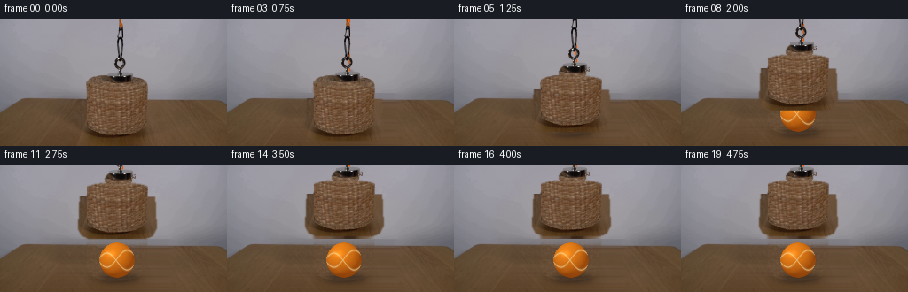
展开代码变化
--- 上一保存版本
+++ 本次保存版本
@@ -79,16 +79,26 @@
"""Return the photographed basket, magnet, and chain as an RGBA sprite."""
alpha = np.zeros((HEIGHT, WIDTH), dtype=np.float32)
- top = _ellipse_mask(source.shape, (132, 87), (41, 12), 0.55)
- body = _polygon_mask(
- source.shape,
- [(91, 87), (173, 87), (174, 128), (171, 134), (164, 137),
- (100, 137), (93, 134), (90, 128)],
- 0.55,
+ # The basket's silhouette is recovered from its local color contrast. A
+ # smooth ellipse and body guide prevent isolated wood texture from leaking.
+ color = source.astype(np.float32)
+ basket_color = np.clip(
+ (color[:, :, 0] - color[:, :, 2] - 5.0) / 18.0, 0.0, 1.0
)
- alpha = np.maximum(alpha, np.maximum(top, body))
-
- magnet = _ellipse_mask(source.shape, (133, 72), (14, 10), 0.65)
+ basket_guide = np.maximum(
+ _ellipse_mask(source.shape, (132, 87), (43, 12), 0.7),
+ _polygon_mask(
+ source.shape,
+ [(90, 86), (174, 86), (176, 127), (172, 135), (164, 138),
+ (100, 138), (92, 135), (88, 127)],
+ 0.7,
+ ),
+ )
+ basket_alpha = np.clip(basket_color * 2.5, 0.0, 1.0) * basket_guide
+ basket_alpha = cv2.GaussianBlur(basket_alpha, (0, 0), 0.35)
+ alpha = np.maximum(alpha, basket_alpha)
+
+ magnet = _ellipse_mask(source.shape, (133, 72), (15, 10), 0.55)
alpha = np.maximum(alpha, magnet)
# The chain is dark against a smooth wall. A row-local background estimate
@@ -105,6 +115,7 @@
chain_alpha = np.clip((distance - 3.0) / 18.0, 0.0, 1.0)
chain_alpha = cv2.GaussianBlur(chain_alpha, (0, 0), 0.35)
chain_alpha *= chain_region.astype(np.float32)
+ chain_alpha = np.clip(chain_alpha * 1.55, 0.0, 1.0)
alpha = np.maximum(alpha, chain_alpha)
rgba = np.dstack([source.astype(np.float32), alpha * 255.0])
候选 03播放与检查图
点击播放 · 原生 RGB 像素
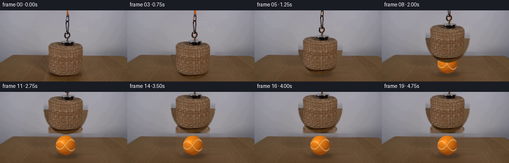
展开代码变化
--- 上一保存版本
+++ 本次保存版本
@@ -79,23 +79,16 @@
"""Return the photographed basket, magnet, and chain as an RGBA sprite."""
alpha = np.zeros((HEIGHT, WIDTH), dtype=np.float32)
- # The basket's silhouette is recovered from its local color contrast. A
- # smooth ellipse and body guide prevent isolated wood texture from leaking.
- color = source.astype(np.float32)
- basket_color = np.clip(
- (color[:, :, 0] - color[:, :, 2] - 5.0) / 18.0, 0.0, 1.0
- )
- basket_guide = np.maximum(
- _ellipse_mask(source.shape, (132, 87), (43, 12), 0.7),
- _polygon_mask(
- source.shape,
- [(90, 86), (174, 86), (176, 127), (172, 135), (164, 138),
- (100, 138), (92, 135), (88, 127)],
- 0.7,
- ),
- )
- basket_alpha = np.clip(basket_color * 2.5, 0.0, 1.0) * basket_guide
- basket_alpha = cv2.GaussianBlur(basket_alpha, (0, 0), 0.35)
+ # Recover the basket silhouette from the wall/basket color difference.
+ # Keeping the source's interior untouched preserves the woven texture.
+ basket_guide = _ellipse_mask(source.shape, (132, 88), (44, 52), 0.75)
+ wall = source[0:66, 15:75].astype(np.float32)
+ wall_mean = np.median(wall, axis=(0, 1))
+ color_delta = source.astype(np.float32) - wall_mean[None, None, :]
+ contrast = np.sqrt(np.sum(color_delta * color_delta, axis=2))
+ basket_alpha = np.clip((contrast - 5.0) / 19.0, 0.0, 1.0)
+ basket_alpha *= basket_guide
+ basket_alpha = cv2.GaussianBlur(basket_alpha, (0, 0), 0.28)
alpha = np.maximum(alpha, basket_alpha)
magnet = _ellipse_mask(source.shape, (133, 72), (15, 10), 0.55)
可观测工具轨迹
实际执行的命令与返回图片。
命令 1exit 0
/bin/bash -c "pwd && rg --files -g 'prompt.txt' -g 'GENERATION_RULES.md' -g '*.py' -g '*.sh' -g '*.md' | sort"
命令 2exit 0
/bin/bash -c "sed -n '1,240p' prompt.txt"
命令 3exit 0
/bin/bash -c "sed -n '1,280p' GENERATION_RULES.md"
命令 4exit 0
/bin/bash -c "ls -la && find . -maxdepth 2 -type f -printf '%p %s bytes\\n' | sort"
命令 5exit 0
/bin/bash -c "python - <<'PY'
from PIL import Image
im=Image.open('first_frame.png')
print(im.size, im.mode)
PY"命令 6exit 0
/bin/bash -c "sed -n '1,260p' artifact_io.py"
命令 7exit 0
/bin/bash -c "python - <<'PY' mods=['cv2','numpy','scipy','PIL','imageio','skimage'] for m in mods: try: x=__import__(m); print(m, getattr(x,'__version__','ok')) except Exception as e: print(m,'MISSING',e) PY"
命令 8exit 0
/bin/bash -c "python - <<'PY'
from PIL import Image
import numpy as np
im=np.array(Image.open('first_frame.png'))
for y in [0,20,40,55,70,85,88,90,92,95,100,110,120,130,134,140]:
print(y, [tuple(im[y,x]) for x in [10,50,80,100,130,160,190,230]])
PY"命令 9exit 0
/bin/bash -c "python - <<'PY'
from PIL import Image
im=Image.open('first_frame.png')
im.crop((70,45,195,144)).resize((500,396),Image.Resampling.NEAREST).save('.tmp/crop.png')
PY"命令 10exit 0
/bin/bash -c "python - <<'PY'
import cv2, numpy as np
from PIL import Image
im=cv2.imread('first_frame.png')
h,w=im.shape[:2]
mask=np.zeros((h,w),np.uint8)
# basket and its shadow
cv2.ellipse(mask,(132,97),(39,40),0,0,180,255,-1)
cv2.rectangle(mask,(92,97),(172,140),255,-1)
# cord chain
cv2.rectangle(mask,(126,0),(149,68),255,-1)
for rad in [3,6,10]:
out=cv2.inpaint(im,mask,rad,cv2.INPAINT_TELEA)
cv2.imwrite(f'.tmp/inpaint{rad}.png',out)
PY"命令 11exit 0
/bin/bash -c "python - <<'PY'
import cv2, numpy as np
im=cv2.imread('first_frame.png'); h,w=im.shape[:2]
mask=np.zeros((h,w),np.uint8)
cv2.ellipse(mask,(132,79),(42,15),0,0,180,255,-1)
cv2.rectangle(mask,(90,79),(174,132),255,-1)
cv2.ellipse(mask,(132,132),(42,10),0,0,180,255,-1)
cv2.rectangle(mask,(126,0),(150,66),255,-1)
for rad in [3,5,8]:
out=cv2.inpaint(im,mask,rad,cv2.INPAINT_NS)
cv2.imwrite(f'.tmp/ns{rad}.png',out)
PY"命令 12exit 0
/bin/bash -c "python - <<'PY'
from PIL import Image
im=Image.open('.tmp/ns5.png')
im.crop((70,55,195,144)).resize((500,356),Image.Resampling.NEAREST).save('.tmp/ns5crop.png')
PY"命令 13exit 0
/bin/bash -c 'python generate.py'
命令 14exit 0
/bin/bash -c "python - <<'PY'
from PIL import Image
import numpy as np
f=np.array(Image.open('first_frame.png')); g=np.array(Image.open('frames/00.png'))
print('exact',np.array_equal(f,g), 'maxdiff',np.abs(f.astype(int)-g.astype(int)).max())
PY"命令 15exit 0
/bin/bash -c "python - <<'PY'
import generate, cv2
from PIL import Image
import numpy as np
s=cv2.cvtColor(cv2.imread('first_frame.png'),cv2.COLOR_BGR2RGB)
b=generate._build_background(s)
Image.fromarray(b).save('.tmp/background.png')
Image.fromarray(b[75:144,70:195]).resize((500,276),Image.Resampling.NEAREST).save('.tmp/background_crop.png')
PY"命令 16exit 0
/bin/bash -c "python - <<'PY'
import generate, cv2
from PIL import Image
import numpy as np
s=cv2.cvtColor(cv2.imread('first_frame.png'),cv2.COLOR_BGR2RGB)
a=generate._build_assembly(s)
rgba=np.zeros((144,256,4),np.uint8); rgba[:,:,:3]=150; rgba[:,:,3]=255
mask=a[:,:,3:4].astype(float)/255
rgba[:,:,:3]=(rgba[:,:,:3]*(1-mask)+a[:,:,:3]*mask).astype(np.uint8)
Image.fromarray(rgba).save('.tmp/assembly_check.png')
Image.fromarray(a[:,:,3]).save('.tmp/alpha.png')
PY"命令 17exit 0
/bin/bash -c "python - <<'PY'
from PIL import Image
im=Image.open('frames/19.png')
im.crop((75,0,195,90)).resize((600,450),Image.Resampling.NEAREST).save('.tmp/lasttop.png')
PY"命令 18exit 0
/bin/bash -c "python - <<'PY'
import generate, cv2
from PIL import Image
import numpy as np
s=cv2.cvtColor(cv2.imread('first_frame.png'),cv2.COLOR_BGR2RGB)
a=generate._build_assembly(s)
for y in [45,50,55,60,65,70,75,80,85]:
print(y, [(x,int(a[y,x,3]),tuple(map(int,a[y,x,:3]))) for x in [125,130,135,140,145]])
PY"命令 19exit 0
/bin/bash -c "python - <<'PY'
from PIL import Image
im=Image.open('frames/19.png')
im.crop((108,20,158,65)).resize((500,450),Image.Resampling.NEAREST).save('.tmp/gap.png')
PY"命令 20exit 0
/bin/bash -c "python - <<'PY'
import cv2, numpy as np
im=cv2.imread('first_frame.png')
for y in range(20,66):
dark=np.where(np.max(im[y],axis=1)<120)[0]
print(y, dark.min() if len(dark) else None, dark.max() if len(dark) else None, len(dark))
PY"命令 21exit 0
/bin/bash -c "python - <<'PY'
from PIL import Image
im=Image.open('first_frame.png')
im.crop((120,0,155,68)).resize((350,680),Image.Resampling.NEAREST).save('.tmp/chaincrop.png')
PY"命令 22exit 0
/bin/bash -c "python - <<'PY'
import cv2,numpy as np
im=cv2.imread('first_frame.png')
# ascii around chain max channel threshold
for y in range(0,68):
row=''
for x in range(120,155):
v=max(im[y,x]); row += '#' if v<80 else '+' if v<125 else '.' if v<145 else ' '
print(f'{y:02d} {row}')
PY"命令 23exit 0
/bin/bash -c "python generate.py && python - <<'PY'
import generate, cv2
from PIL import Image
import numpy as np
s=cv2.cvtColor(cv2.imread('first_frame.png'),cv2.COLOR_BGR2RGB)
a=generate._build_assembly(s)
rgba=np.zeros((144,256,4),np.uint8); rgba[:,:,:3]=150; rgba[:,:,3]=255
mask=a[:,:,3:4].astype(float)/255
rgba[:,:,:3]=(rgba[:,:,:3]*(1-mask)+a[:,:,:3]*mask).astype(np.uint8)
Image.fromarray(rgba).save('.tmp/assembly_check2.png')
PY"命令 24exit 0
/bin/bash -c "python - <<'PY'
from PIL import Image
import numpy as np
im=np.array(Image.open('first_frame.png')).astype(float)
print('row 70')
for x in range(85,180,2):
r,g,b=im[70,x]; score=r-b
if score>2: print(x,tuple(map(int,(r,g,b))),round(score,1))
PY"命令 25exit 0
/bin/bash -c "python - <<'PY'
from PIL import Image
im=Image.open('frames/19.png')
im.crop((75,0,195,90)).resize((600,450),Image.Resampling.NEAREST).save('.tmp/lasttop2.png')
PY"命令 26exit 0
/bin/bash -c "python - <<'PY'
import cv2,numpy as np
s=cv2.cvtColor(cv2.imread('first_frame.png'),cv2.COLOR_BGR2RGB).astype(float)
y,x=np.indices((144,256))
guide=((x-132)/43)**2+((y-88)/51)**2
inside=guide<1
score=s[:,:,0]-s[:,:,2]
for yy in [80,82,84,86,88,90,95,100,120,130,135,138]:
xs=np.where(inside[yy]&(score[yy]>15))[0]
print(yy, (xs.min(),xs.max(),len(xs)) if len(xs) else None)
PY"命令 27exit 0
/bin/bash -c "python - <<'PY'
import cv2,numpy as np
im=cv2.imread('first_frame.png')
for y in [60,62,64,66,68,70,72,74,76,78,80,82,84,86,88]:
print('\\ny',y)
print(' '.join(f'{x}:{tuple(int(v) for v in im[y,x][::-1])}' for x in [92,94,96,98,100,102,104,106,108,110]))
PY"命令 28exit 0
/bin/bash -c "python - <<'PY'
import cv2,numpy as np
s=cv2.cvtColor(cv2.imread('first_frame.png'),cv2.COLOR_BGR2RGB).astype(float)
y,x=np.indices((144,256))
guide=((x-132)/44)**2+((y-88)/53)**2
score=s[:,:,0]-s[:,:,2]
m=(guide<1)&(score>12)
print(m.sum())
for yy in [80,82,84,86,88,90,95,100,120,130,135,138]:
xs=np.where(m[yy])[0]
print(yy, (xs.min(),xs.max(),len(xs)) if len(xs) else None)
PY"命令 29exit 0
/bin/bash -c "python - <<'PY'
import cv2,numpy as np
im=cv2.imread('first_frame.png')
for x in [85,88,90,92,94,96,98,100,165,170,173,176,180]:
print('\\nx',x)
for y in [70,75,80,85,90,95,100,110,120,130,135,138]:
print(y,tuple(int(v) for v in im[y,x][::-1]),end='; ')
PY"命令 30exit 0
/bin/bash -c "sed -n '1,360p' generate.py"
命令 31exit 0
/bin/bash -c "python - <<'PY'
import cv2,numpy as np
s=cv2.cvtColor(cv2.imread('first_frame.png'),cv2.COLOR_BGR2RGB).astype(float)
score=s[:,:,0]-s[:,:,2]
for y in range(60,100):
xs=np.where(score[y]>12)[0]
# contiguous main near center
xs=xs[(xs>80)&(xs<185)]
print(y, xs.min() if len(xs) else '-', xs.max() if len(xs) else '-', len(xs))
PY"命令 32exit 0
/bin/bash -c "python - <<'PY'
from PIL import Image
for i in [6,8,10,12,14,16,18,19]:
im=Image.open(f'frames/{i:02d}.png')
im.crop((70,0,195,144)).resize((500,576),Image.Resampling.NEAREST).save(f'.tmp/f{i:02d}.png')
PY"命令 33exit 0
/bin/bash -c "python - <<'PY'
import cv2,numpy as np
s=cv2.cvtColor(cv2.imread('first_frame.png'),cv2.COLOR_BGR2RGB)
# Find vertical span of brownish basket per column
score=s[:,:,0].astype(int)-s[:,:,2].astype(int)
for x in [88,90,92,94,96,98,100,102,104,106,108,110,112,114,116,118,120,122,124,126,128,130,132,134,136,138,140,142,144,146,148,150,152,154,156,158,160,162,164,166,168,170,172,174,176]:
ys=np.where(score[:,x]>12)[0]
ys=ys[(ys>=60)&(ys<=142)]
print(x, ys.min() if len(ys) else '-', ys.max() if len(ys) else '-')
PY"命令 34exit 0
/bin/bash -c "python - <<'PY'
import cv2,numpy as np
s=cv2.cvtColor(cv2.imread('first_frame.png'),cv2.COLOR_BGR2RGB)
score=s[:,:,0].astype(int)-s[:,:,2].astype(int)
for y in range(60,144):
xs=np.where(score[y]>12)[0]
# groups
gs=[]
if len(xs):
starts=np.r_[0,np.flatnonzero(np.diff(xs)>1)+1]; ends=np.r_[starts[1:],len(xs)]
gs=[(int(xs[a]),int(xs[b-1])) for a,b in zip(starts,ends) if b-a>2]
print(y,gs)
PY"命令 35exit 0
/bin/bash -c "python - <<'PY'
from PIL import Image
orig=Image.open('first_frame.png').crop((120,0,155,68)).resize((210,408),Image.Resampling.NEAREST)
gen=Image.open('frames/19.png').crop((120,0,155,68)).resize((210,408),Image.Resampling.NEAREST)
out=Image.new('RGB',(440,408),'white'); out.paste(orig,(0,0)); out.paste(gen,(230,0)); out.save('.tmp/chaincompare.png')
PY"命令 36exit 0
/bin/bash -c "python - <<'PY'
import cv2,numpy as np
im=cv2.imread('first_frame.png')
for y in range(8,65):
# max channel threshold 80, group xs 124-148
xs=np.where(np.max(im[y],axis=1)[124:149]<90)[0]+124
print(y, (xs.min(),xs.max(),len(xs)) if len(xs) else None)
PY"命令 37exit 0
/bin/bash -c "python - <<'PY'
import cv2,numpy as np
im=cv2.cvtColor(cv2.imread('first_frame.png'),cv2.COLOR_BGR2RGB).astype(float)
for y in [65,66,67,68,69,70,71,72,73,74,75,76,77,78,79,80,81,82,83,84,85,86,87,88,89,90,91]:
vals=[]
for x in range(90,177):
r,g,b=im[y,x]
if r-b>12 and r>50: vals.append(x)
# likely basket only group >20 px
if len(vals): print(y,min(vals),max(vals),len(vals))
PY"命令 38exit 0
/bin/bash -c "python - <<'PY'
import generate,cv2
from PIL import Image
import numpy as np
s=cv2.cvtColor(cv2.imread('first_frame.png'),cv2.COLOR_BGR2RGB)
a=generate._build_assembly(s)
# show alpha at row 100 etc
for y in [75,80,85,88,90,92,95,100,110,120,130,135,137,138]:
print(y, [(x,int(a[y,x,3])) for x in [88,90,92,94,96,98,100,110,132,155,165,168,170,172,174,176]])
PY"命令 39exit 0
/bin/bash -c "python - <<'PY'
import cv2,numpy as np
im=cv2.imread('first_frame.png')
# print rgb row 90 from 70-100
for y in [90,92,95,100]:
print(y)
print([tuple(int(v) for v in im[y,x][::-1]) for x in range(80,101)])
PY"命令 40exit 0
/bin/bash -c "python - <<'PY'
import cv2,numpy as np
im=cv2.imread('first_frame.png')
for y in [75,78,80,82,84,86,88,89,90]:
print(y,[tuple(int(v) for v in im[y,x][::-1]) for x in range(90,101)])
PY"命令 41exit 0
/bin/bash -c "python generate.py && python - <<'PY'
import generate, cv2
from PIL import Image
import numpy as np
s=cv2.cvtColor(cv2.imread('first_frame.png'),cv2.COLOR_BGR2RGB)
a=generate._build_assembly(s)
rgba=np.zeros((144,256,4),np.uint8); rgba[:,:,:3]=150; rgba[:,:,3]=255
mask=a[:,:,3:4].astype(float)/255
rgba[:,:,:3]=(rgba[:,:,:3]*(1-mask)+a[:,:,:3]*mask).astype(np.uint8)
Image.fromarray(rgba).save('.tmp/assembly_check3.png')
PY"命令 42exit 0
/bin/bash -c "python - <<'PY'
import cv2,numpy as np
im=cv2.imread('first_frame.png')
for y in [92,93,94,95,96,97,98,99,100,101,102,103,104,105,106,107,108,109,110,115,120,125,130,135,138,139,140,141,142,143]:
print(y,[tuple(int(v) for v in im[y,x][::-1]) for x in [0,5,10,15,20,25,30,40,50,60]])
PY"命令 43exit 0
/bin/bash -c "python - <<'PY'
import cv2,numpy as np
im=cv2.cvtColor(cv2.imread('first_frame.png'),cv2.COLOR_BGR2RGB).astype(float)
# estimate wall color median outside object per row and determine deviation by row
for y in [60,65,70,75,80,85,88,90,92,94,96,98,100,102,104,106,108,110,120,130,135,138]:
bg=np.median(np.concatenate([im[y,5:75], im[y,185:250]]),axis=0)
vals=[]
for x in range(80,185):
d=np.linalg.norm(im[y,x]-bg)
if d>20: vals.append(x)
# groups len>10
gs=[]
if vals:
starts=np.r_[0,np.flatnonzero(np.diff(vals)>1)+1]; ends=np.r_[starts[1:],len(vals)]
gs=[(vals[a],vals[b-1]) for a,b in zip(starts,ends) if b-a>8]
print(y,tuple(bg.astype(int)),gs)
PY"命令 44exit 0
/bin/bash -c "python - <<'PY'
import cv2,numpy as np
im=cv2.imread('first_frame.png')
# test wall mean and norm distance at points
bg=np.array([148,148,157],float)
for y,x in [(92,10),(92,15),(92,20),(100,20),(100,30),(80,50),(80,90),(80,98),(75,95),(95,90),(120,88),(140,80),(140,88),(140,95)]:
rgb=im[y,x][::-1].astype(float); print(y,x,tuple(rgb.astype(int)),round(np.linalg.norm(rgb-bg),1))
PY"命令 45exit 0
/bin/bash -c "python - <<'PY'
from pathlib import Path
from PIL import Image
import numpy as np
root=Path('.')
frames=sorted((root/'frames').glob('*.png'))
arr=np.stack([np.array(Image.open(p).convert('RGB')) for p in frames])
first=np.array(Image.open('first_frame.png').convert('RGB'))
z=np.load('pixels.npz')['pixels']
print('frames', len(frames), arr.shape, arr.dtype)
print('pixels.npz', z.shape, z.dtype)
print('frame0 exact', np.array_equal(arr[0], first))
print('changed pixels per step', [int(np.count_nonzero(np.any(arr[i] "'!= arr[i-1], axis=2))) for i in range(1,20)])
print('"'file sizes', {p.name: p.stat().st_size for p in [root/'pixels.npz', root/'index.html', root/'inspection.png']})
PY"视觉工具实际返回图片 1
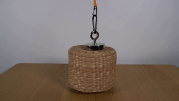
视觉工具实际返回图片 2
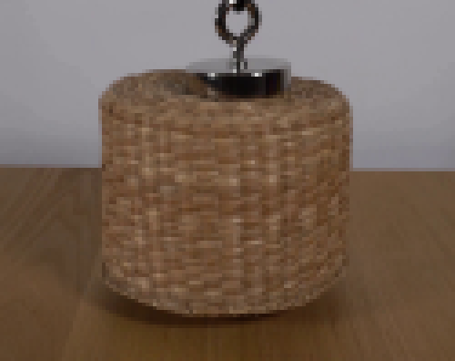
视觉工具实际返回图片 3
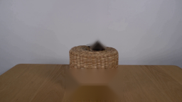
视觉工具实际返回图片 4
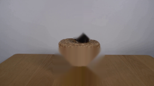
视觉工具实际返回图片 5
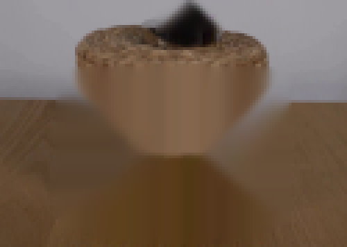
视觉工具实际返回图片 6

视觉工具实际返回图片 7

视觉工具实际返回图片 8
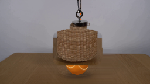
视觉工具实际返回图片 9
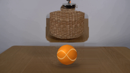
视觉工具实际返回图片 10
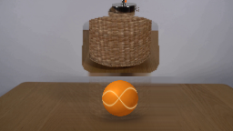
视觉工具实际返回图片 11
视觉工具实际返回图片 12
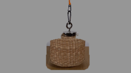
视觉工具实际返回图片 13
视觉工具实际返回图片 14
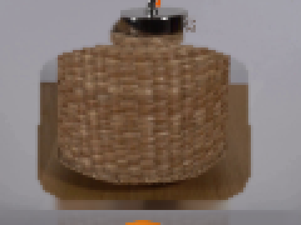
视觉工具实际返回图片 15
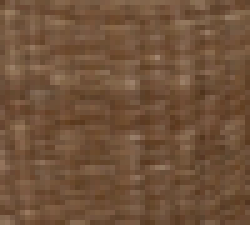
视觉工具实际返回图片 16
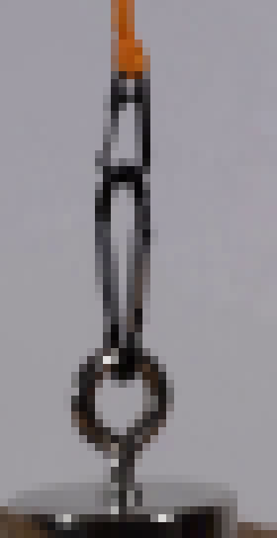
视觉工具实际返回图片 17
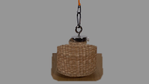
视觉工具实际返回图片 18
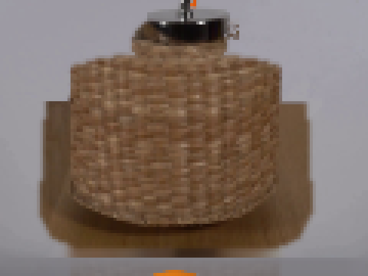
视觉工具实际返回图片 19
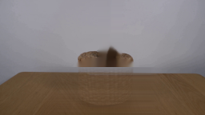
视觉工具实际返回图片 20
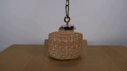
视觉工具实际返回图片 21
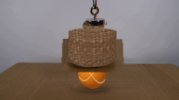
视觉工具实际返回图片 22
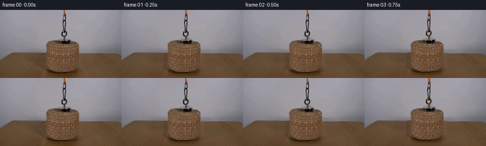
视觉工具实际返回图片 23
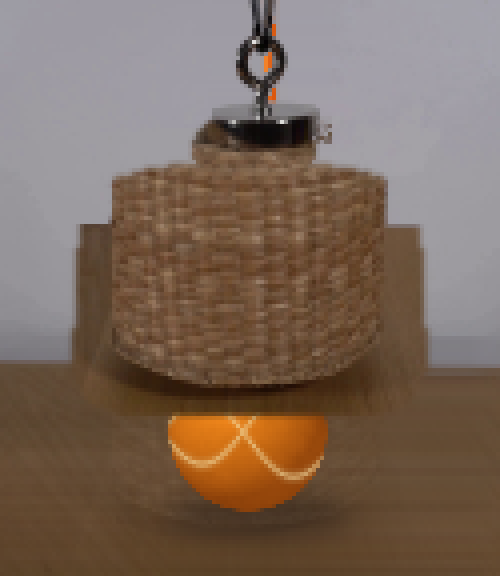
视觉工具实际返回图片 24
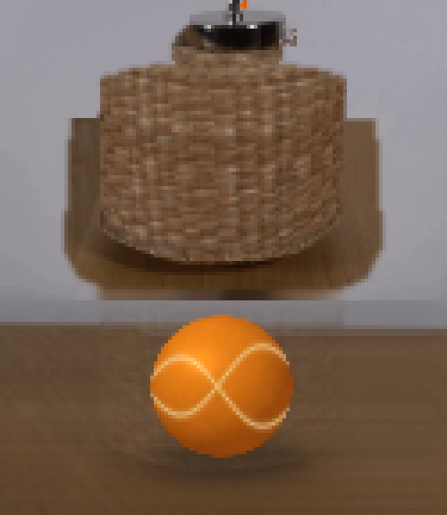
视觉工具实际返回图片 25
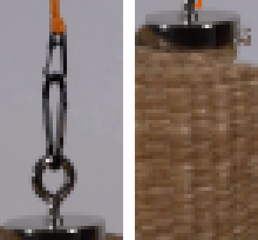
视觉工具实际返回图片 26
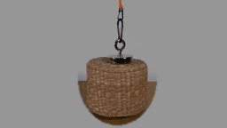
视觉工具实际返回图片 27

视觉工具实际返回图片 28
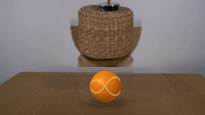
视觉工具实际返回图片 29
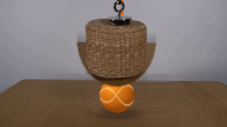
保存候选 3 份；完成命令 45 次；可验证图片返回 29 张。原始 API 响应与完整日志保留在本地。